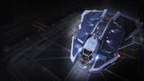

Макс. скорость / с форсажем
215 / 349 м/с
Легендарный дуэлянт для малых площадок и выгодная покупка для чистого боя. Две большие точки подвески на исключительно манёвренном корпусе позволяют перекрутить почти любую цель и разобрать корабли намного крупнее. В своём классе Vulture в числе лучших: мешают только знаменитая нехватка мощности силовой установки и скромные внутренние отсеки. Мало какой корабль даёт столько удовольствия за эти деньги.

Корабль получает оценку пригодности от 1 до 100 в полностью улучшенной сборке для этой роли, в сравнении со всеми другими кораблями той же роли. См. методику оценки кораблей.
Vulture — карманный боевой корабль Core Dynamics: маленький и юркий, с двумя большими точками подвески. Серьёзное вооружение на корпусе, который разворачивается как истребитель. Недорогой, крепкий для своих размеров и исключительно манёвренный, он давно известен как истребитель великанов: перекручивает средние и крупные цели и раз за разом попадает из обеих пушек.
Главный хронический недостаток — питание. Силовой установке класса 4 трудно одновременно тянуть два больших орудия, щиты и форсаж. Поэтому сборка держится на приоритетах питания и экономичном оружии. Решишь эту задачу — получишь один из самых выгодных боевых кораблей в игре: маленького хищника с тяжёлым ударом, способного взлететь с любого аванпоста.
Манёвренные дуэли на корабле для малых площадок: охота за наградами в местах добычи ресурсов (RES), бой один на один с более крупными НИП и бюджетные схватки, где решают превосходство в развороте и попадания из двух больших пушек.
Четыре качества помогают Vulture одолеть противников крупнее:
Класс 4 у силовой установки постоянно даёт о себе знать. Чтобы одновременно использовать две большие пушки, щит и форсаж, нужны разумные приоритеты питания и экономичное оружие, иначе часть модулей отключится в бою. Две точки подвески и скромные отсеки также ограничивают длительный урон и запас прочности. Vulture вознаграждает навык и дисциплину, а небрежному пилоту отказывает в самый неподходящий момент.
Две большие точки подвески и лучшая манёвренность в классе на корабле для малых площадок дешевле 5 млн позволяют брать противников крупнее. Сдерживают его только нехватка мощности установки класса 4 и скромные внутренние отсеки.
Итоговая 80/100 основана на приоритетных критериях боевой роли. У каждого критерия есть вес (доля от 100); корабль получает часть баллов по сравнению со всеми соперниками. В сумме они дают итоговую оценку.
| Критерий | Баллы | Почему столько |
|---|---|---|
| Оружейные точки | 25/30 | Две большие точки подвески дают мощный залп на малом корпусе, лучший в классе. Но всего две точки ограничивают длительный урон, а установка класса 4 требует экономичного оружия: один лучевой лазер и одна многоствольная пушка с «Форсированием». |
| Распределитель энергии | 7/10 | Распределитель энергии класса 5 с рейтингом A, ускоренной зарядкой и сверхпроводниками достаточно хорошо питает две большие пушки и форсаж. Размер обычный для класса; настоящий предел задаёт силовая установка, а не распределитель. |
| Щит | 13/15 | Базовый щит на ~293 МДж силён для малого корпуса. Военный отсек класса 5, двухконтурный генератор и два усилителя с «Усиленной конструкцией» поднимают показатель до ~950 МДж после инженерных улучшений. Живучесть на тонну высока. |
| Броня и отсеки | 8/15 | Базовая броня 288 и скромные дополнительные отсеки (5·4·2·1·1·1·1), включая один военный отсек класса 5, ограничивают число усилений. Это слабейший показатель и жёсткий предел способности держать удар. |
| Манёвренность | 20/20 | Лучшая манёвренность в классе при массе корпуса 230 т. Исключительная скорость разворота позволяет перекрутить почти любую цель и держать её под огнём обеих пушек без ответных попаданий. Это главное преимущество корабля в роли. |
| Вспомогательные модули и гибкость | 7/10 | Четырёх вспомогательных креплений хватает на усилители, дипольные отражатели и теплоотводы. Но малая площадка, узкая специализация и дефицит энергии оставляют мало места для грузов и других задач. Это чистый дуэлянт. |
| Взвешенный итог | 80/100 | Совпадает с итоговой оценкой пригодности корабля для этой роли. |
Вес каждого критерия отражает редакционную расстановку приоритетов роли, а не формулу игры. Длина полосы показывает, какую долю баллов по критерию заработал корабль. Длинные полосы дали основную часть оценки, короткие показывают, где он потерял баллы. См. методику оценки кораблей.
Во всех таблицах корабли оцениваются именно для бояи разделены по размеру посадочной площадки. Столбец Оружейные точки показывает набор орудийных гнёзд, от которого зависит вооружение. Оценка пригодности от 1 до 100 такая же, как на остальных страницах.
| Корабль | Класс | Оружейные точки | Плюсы и минусы | Оценка |
|---|---|---|---|---|
| Kestrel Mk II | Малая | 3L 2S | Выше оценка; крепления; универсальностьБроня | 85 |
| Vulture этот | Малая | 2L | — этот корабль (для сравнения) | 80 |
| Корабль Cobra Mk V | Малая | 3M 2S | Гибкость; орудийные гнёздаНиже оценка; распределитель | 78 |
| Imperial Courier | Малая | 3 млн | Манёвренность; щитНиже оценка; броня | 70 |
| Viper Mk IV | Малая | 2M 2S | Броня; распределительОценка ниже; манёвренность | 66 |
| кораблю Diamondback Explorer | Малая | 1L 2M | Гибкость; манёвренностьНиже оценка; броня | 65 |
| Viper Mk III | Малая | 2M 2S | Манёвренность; точки подвескиНиже оценка; броня | 63 |
| Diamondback Scout | Малая | 2M 2S | Гибкость; броняНиже оценка; щит | 60 |
| Корабль Cobra Mk III | Малая | 2M 2S | Манёвренность; распределительНиже оценка; щит | 58 |
| Eagle Mk II | Малая | 3S | Манёвренность; точки подвескиНиже оценка; щит | 55 |
| Imperial Eagle | Малая | 1M 2S | Манёвренность; точки подвескиОценка ниже; гибкость | 54 |
| Корабль Cobra Mk IV | Малая | 2M 3S | Точки подвески; броняОценка ниже; манёвренность | 44 |
| Sidewinder Mk I | Малая | 2 малых | Манёвренность; гибкостьНиже оценка; орудийные гнёзда | 40 |
В списке 13 боевых кораблей для малых площадок. Лидер — Kestrel Mk II (85). Все они садятся там же, где Sidewinder, и напрямую с ним конкурируют.
| Корабль | Класс | Оружейные точки | Плюсы и минусы | Оценка |
|---|---|---|---|---|
| Federal Corvette | Большая | 2H 1L 2M 2S | Выше оценка; орудийные гнёзда; распределительЩит | 98 |
| Imperial Cutter | Большая | 1H 2L 4M | Выше оценка; распределитель; щитМанёвренность | 91 |
| Anaconda | Большая | 1H 3L 2M 2S | Выше оценка; распределитель; щитМанёвренность | 88 |
| Imperial Clipper | Большая | 2L 2M | Манёвренность; распределительНиже оценка; орудийные гнёзда | 79 |
| Type-10 Defender | Большая | 4L 3M 2S | Точки подвески; броняОценка ниже; манёвренность | 78 |
Оценку получили 5 больших боевых кораблей. Лидер — Federal Corvette (98). У них лучше показатели, но нужны большие площадки и бюджет.
| Корабль | Класс | Оружейные точки | Плюсы и минусы | Оценка |
|---|---|---|---|---|
| Fer-de-Lance | Средняя | 1H 4M | Выше оценка; манёвренность; крепленияБроня | 93 |
| Krait Mk II | Средняя | 3L 2M | Выше оценка; крепления; броняРаспределитель энергии | 90 |
| Python Mk II | Средняя | 4L 2M | Выше оценка; орудийные гнёзда; распределительБроня | 90 |
| Mamba | Средняя | 1H 2L 2S | Выше оценка; распределитель; крепленияБроня | 89 |
| Корабль Alliance Chieftain | Средняя | 2L 1M 3S | Выше оценка; манёвренность; броняЩит | 88 |
| Корабль Alliance Challenger | Средняя | 1L 3M 3S | Выше оценка; броня; щитМанёвренность | 86 |
| Corsair | Средняя | 3L 3M | Выше оценка; распределитель; универсальностьМанёвренность | 85 |
| Federal Assault Ship | Средняя | 2L 2M | Выше оценка; распределитель; манёвренностьЩит | 84 |
| Python | Средняя | 3L 2M | Выше оценка; распределитель; универсальностьМанёвренность | 83 |
| Federal Gunship | Средняя | 1L 4M 2S | Выше оценка; распределитель; броняМанёвренность | 82 |
| Корабль Alliance Crusader | Средняя | 1L 2M 3S | Распределитель; броняМанёвренность | 80 |
| Federal Dropship | Средняя | 1L 4M | Броня; орудийные гнёздаОценка ниже; манёвренность | 76 |
| Krait Phantom | Средняя | 2L 2M | Гибкость; манёвренностьНиже оценка; броня | 74 |
Среди боевых кораблей для средних площадок (оценено 13) лидирует Fer-de-Lance (93). Здесь дешевле корпуса и меньше площадки. По характеристикам они уступают этому кораблю, но относятся к другому посадочному классу.
При цене ~4.7 млн кр. Vulture доступен, не требует звания или разрешения, а дешёвая страховка позволяет летать агрессивно. Инженерные улучшения сосредоточены на силовой установке и оружии: так устраняется главный недостаток.
Это один из самых выгодных боевых кораблей в игре. За несколько миллионов кредитов получаешь корпус, который в умелых руках выигрывает дуэли у кораблей в двадцать раз дороже.
Меньше 5 млн кредитов за корабль, разбирающий цели крупнее, и дешёвая страховка, которая поощряет агрессивный стиль. Vulture — классический первый серьёзный боевой корабль для любителей дуэлей.
Манёвренная дуэльная сборка на двух больших пушках с внимательным управлением энергией. Начальный вариант — покупные модули; класс A — основа для боя; инженерный вариант следует общему боевому шаблону, но экономит мощность.
| Отсек | Начальная · только покупка | Класс A · без улучшений | С инженерными улучшениями | Примечания |
|---|---|---|---|---|
| Оружейные точки | ||||
| Большая 1 | 3E импульсный лазер (на подвижном подвесе) | 3C многоствольную пушку (на подвижном подвесе) | G5 Форсирование + Коррозионные снаряды | Основная большая точка подвески. Форсированная многоствольная пушка с «Коррозионными снарядами» снижает сопротивление брони, так что обе пушки бьют сильнее. |
| Большое 2 | 3E импульсный лазер (на подвижном подвесе) | 3C лучевой лазер (на подвижном подвесе) | G5 Эффективный + «Отвод тепла» | Вторая большая точка подвески. Эффективный лучевой лазер с эффектом «Отвод тепла» снимает щиты, отводит тепло и снижает расход энергии. |
| Внешние крепления | ||||
| Крепление 1 | 0E усилитель щита | 0A усилитель щита | G5 Усиленная конструкция + Суперконденсаторы | Первый усилитель щита. Усиленная конструкция повышает базовую прочность двухконтурного щита в МДж. Самая дешёвая заметная прибавка к прочности. |
| Крепление 2 | — | 0A усилитель щита | G5 Усиленная конструкция + Суперконденсаторы | Второй усилитель с «Усиленной конструкцией». Прибавка уменьшается, но на корабле с двумя такими креплениями он по-прежнему оправдан. |
| Крепление 3 | — | 0I Пусковая установка дипольных отражателей | G1 Увеличенный боезапас (без экспериментального эффекта) | Необязательно, низкий приоритет: увеличение боезапаса даёт больше залпов пусковую установку дипольных отражателей . Дипольные отражатели сбивают наведение подвижных и турельных орудий. |
| Крепление 4 | — | 0I Теплоотводная катапульта | G1 Увеличенный боезапас (без экспериментального эффекта) | Необязательно, низкий приоритет: увеличенный боезапас добавляет заряды теплоотвода. Сбрасывает тепло при скрытном ходе и помогает восстановить охлаждение «Тепловым отводом». |
| Основные модули | ||||
| Обшивка | Лёгкий сплав | Композит военного класса | G5 Усиленная конструкция + Дополнительное бронирование | |
| Силовая установка | 4E Силовая установка | 4A Силовая установка | G5 Форсирование + Распределение тепла | Хроническое слабое место Vulture. В первую очередь поставь «Перегрузку»: «Рассеивание тепла» отводит лишний нагрев. |
| Маневровые двигатели | 5E Маневровые двигатели | 5A Маневровые двигатели | G5 Грязная настройка двигателей + Форсированные двигатели | Класс A, «Грязная настройка двигателей» и «Форсированные двигатели» сохраняют и улучшают манёвренность, которая выигрывает дуэль. |
| Рамочно-сместительный двигатель (FSD) | 4E Рамочно-сместительный двигатель (FSD) | 4A Рамочно-сместительный двигатель (FSD) | G3 Увеличенная дальность + Управление массой | Класс A нужен, чтобы добираться до мест добычи ресурсов и пунктов сдачи наград. Достаточно улучшения дальности G3, боевому кораблю рекорды прыжка не нужны. |
| Система жизнеобеспечения | 3E Система жизнеобеспечения | 3D Система жизнеобеспечения | G5 Снижение массы (без экспериментального эффекта) | Поставьте класс D ради меньшей массы; Снижение массы дополнительно облегчает модуль; система жизнеобеспечения не имеет экспериментального эффекта. |
| Распределитель энергии | 5E Распределитель энергии | 5A Распределитель энергии | G5 Ускоренная зарядка + Сверхпроводящие каналы | Переведи этот модуль на класс A вторым. «Ускоренная зарядка» и «Сверхпроводники» обеспечат работу двух больших пушек и форсажа без перебоев. |
| Сенсоры | 4E Сенсоры | 4D Сенсоры | G5 Снижение массы (без экспериментального эффекта) | Понизьте до класса D и облегчите: лишняя дальность сенсоров в бою не нужна, зато масса меньше. |
| Топливный бак | 3C Топливный бак | 3C Топливный бак | (нет чертежа улучшения) | Штатный бак класса C. Объём фиксирован, инженеры его не меняют. |
| Военные отсеки | ||||
| Военный отсек 1 | 5E усилитель корпуса | 5D усилитель корпуса | G5 Усиленная конструкция + Дополнительное бронирование | Усиленный модуль бронирования корпуса в военном отсеке — самый дешёвый способ заметно повысить эффективную прочность брони. |
| Дополнительные отсеки | ||||
| Класс 5 | 5E Генератор щита | 5C Генератор двухконтурного щита | G5 Усиленный + Быстрая зарядка | Двухконтурный щит быстро восстанавливается между схватками. «Усиление» максимизирует запас МДж, а «Быстрая зарядка» сохраняет быстрое восстановление. |
| Класс 4 | 4E Грузовой стеллаж | 4A Банк щита | G4 Специализированный (без экспериментального эффекта) | Необязательно, низкий приоритет: специализация снижает всплеск нагрева и потребления. Быстро восстанавливает щит в аварийной ситуации. |
| Класс 2 | — | 2D усилитель корпуса | G5 Усиленная конструкция + Дополнительное бронирование | Ещё один модуль усиления корпусас «Усиленной конструкцией»: прибавка брони складывается линейно. |
| Класс 1 | — | 1D модулей | (нет чертежа улучшения) | модулей распределяет урон пробитий между внутренними модулями; не дорабатывается. |
| Класс 1 | — | 1A Банк щита | G4 Специализированный (без экспериментального эффекта) | Необязательно, низкий приоритет: специализация снижает всплеск нагрева и потребления. Быстро восстанавливает щит в аварийной ситуации. |
| Класс 1 | — | 1D усилитель корпуса | G5 Усиленная конструкция + Дополнительное бронирование | Последний модуль усиления корпуса с «Усиленной конструкцией», если позволяет отсек. |
| Класс 1 | — | 1D модулей | (нет чертежа улучшения) | Второй пакет усиления модулей защищает основные модули, без которых корабль не летает. Инженерных улучшений нет. |
| Планировщики и экспорт | ||||
| Открыть в Coriolis | открыть | открыть | открыть | Открывает coriolis.io одним нажатием. |
| Открыть в EDSY | открыть | открыть | открыть | Открывает edsy.org одним нажатием. |
| Скопировать SLEF | Копирует исходный экспорт оснащения корабля (SLEF) для выбранного варианта. | |||
Силовая установка Vulture класса 4 не тянет две большие пушки, щит и форсаж одновременно на пределе. Поставь «Перегрузку», подбери экономичное оружие (один лучевой лазер и одну экономичную многоствольную пушку) и настрой приоритеты питания, чтобы ничего важного не отключалось посреди боя.
Купи корпус (~4.7 млн кр.). Штатная обшивка из лёгкого сплава пока остаётся, военный композит пойдёт в сборку класса A. Поставь 5E генератор щита, один 0E усилитель щита и 5E в военный отсек: модуль усиления корпуса. Остальные три вспомогательных крепления и свободные внутренние отсеки пока оставь пустыми.
Вооружи обе большие точки покупными модулями: два импульсных лазерана подвижном подвесе мало нагружают питание и прощают ошибки, пока осваиваешь корабль.
Настрой приоритеты питания так, чтобы при выпуске оружия и форсаже не отключались пушки или щит.
Приоритет перехода Vulture на класс A: питание всегда первым.
На Vulture питание важнее всего. Перегруженная установка класса 4 — разница между двумя большими пушками, которые стабильно стреляют, и кораблём, который отключается в бою. Доработай её до оружия; военный композит и усиления поставь после того, как пушки заработают.
Общий боевой шаблон, но с приоритетом питания. Закрепи чертежи, чтобы применять улучшения G1→G5 удалённо, а за экспериментальными эффектами прилетай лично.
| Модуль | Чертёж | Экспериментальный эффект | Инженер |
|---|---|---|---|
| Силовая установка (4) | Форсирование (5-я ступень) | Распределение тепла | Hera Tani |
| Маневровые двигатели (5) | Грязная настройка двигателей (5-я ступень) | Форсированные двигатели | Professor Palin / Mel Brandon |
| многоствольную пушку | Форсирование (5-я ступень) | Коррозионные снаряды | Tod McQuinn |
| лучевой лазер | Эффективный (5-я ступень) | «Отвод тепла» | Broo Tarquin |
| Распределитель энергии (5) | Ускоренная зарядка (5-я ступень) | Сверхпроводящие каналы | The Dweller |
| Двухконтурный щит (5) | Усиленный (5-я ступень) | Быстрая зарядка | Lei Cheung |
| Усилители щита | Усиленная конструкция (5-я ступень) | Суперконденсаторы | Didi Vatermann |
| Обшивка | Усиленная конструкция (5-я ступень) | Дополнительное бронирование | Selene Jean |
| усилитель корпуса | Усиленная конструкция (5-я ступень) | Дополнительное бронирование | Selene Jean |
Небольшой или средний расход: только два орудия, основные модули и щит с улучшениями G5. Для такой эффективности это недорого. Чертёж силовой установки в приоритете. Если материалы уже собраны, их нужно только потратить. При необходимости уточни расход по каждому чертежу.
Примерный рост характеристик для трёх вариантов (ориентировочные значения, не точные результаты улучшений):
| Показатель | Начальная | Класс A | С инженерными улучшениями |
|---|---|---|---|
| Макс. скорость с форсажем | 349 м/с | 349 м/с | ~430 м/с |
| Манёвренность | выдающаяся | выдающаяся | выдающаяся |
| Прочность брони (без сопротивлений) | ~650 | ~1,250 | ~1,900 |
| Щит (МДж) | ~380 | ~520 | ~950 |
| Урон в секунду при длительном огне | высокая | высокая | высокий (ограничен питанием) |
| Запас мощности | впритык | впритык | хватает |
В начальной сборке штатный лёгкий сплав и одно усиление в военном отсеке (~650 без учёта сопротивлений). В сборке класса A ставится военный композит и добавляются модули класса D для усиления корпуса (~1,250 без учёта сопротивлений). После инженерных улучшений «Усиленная конструкция» на обшивке и усиления с «Глубоким бронированием» дают Vulture ~1,900 прочности корпуса за быстро восстанавливающимся двухконтурным щитом. С перегруженной установкой это хищник со скоростью 430 м/с и щитом 950 МДж: перекручивает почти всё и бьёт двумя большими пушками, когда хочет. Питание по-прежнему впритык, но хорошая сборка справляется, а манёвренность исключительная.
Подходит любое опасное место добычи ресурсов (Haz RES) рядом с аванпостом. У домашней базы награды за охоту и задания на уничтожение целей помогают заодно улучшать репутацию у Империи. Малая площадка позволяет сдавать задания на аванпостах.
Vulture — бюджетный истребитель великанов: две большие пушки и исключительная манёвренность на недорогом корпусе для малых площадок. Перекручивает почти любого противника. Прожорливость силовой установки ограничивает сборку, а пилотирование требует навыка, но в умелых руках он разбирает корабли во много раз дороже. Не зря его давно любят: мало какие боевые корабли так хорошо вознаграждают мастерство.
Данные на странице сверены с источниками ниже.